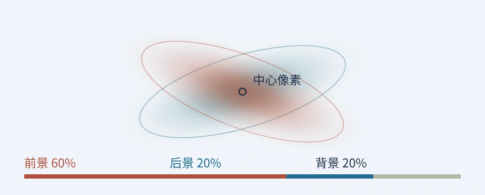

序言
用手机绕着一把木椅拍一圈。回看视频时，你只能沿拍摄时那条路线走；把这些照片做成三维表示以后，却可以把视点稍稍挪到两张照片之间。电脑要为这个从未拍过的位置算出一张新图。这件事叫新视角合成，3D 高斯渲染就是其中一种做法。
照片先要放回各自的位置
第一步是知道每张照片从哪里拍、朝哪边看。前者是相机的位置，后者是它的朝向，两者合起来叫位姿。还要知道镜头如何把空间中的点映射到像素上，例如焦距有多大。拿错焦距，同一个椅背就会被投得太宽或太窄。
照片本身也能提供线索。拿两张从左右两侧拍的照片，在两张图上分别标出同一个椅背角点。每个像素对应一条从相机出发的射线；知道两台相机的位置后，两条射线的交会处给出角点的大致三维位置。对许多彼此重叠的照片一起估计相机和角点，便能得到稀疏点云。它像一张由少量测量点勾出的草图，椅背上的大片木纹仍是空白。
一个高斯怎样画出一片颜色
如果只在每个测量点上画一个像素，镜头靠近时会看到很多空隙。3DGS 在空间中放置有范围的高斯。想象一团颜料，中心最浓，向外逐渐变淡。它有三维中心、三个方向上的宽度和朝向，还带有颜色与不透明度。高斯这个名字描述的就是影响随距离衰减的形状。
三个方向可以有不同宽度。沿着椅背横梁，一个高斯可以沿木条方向拉长，在垂直木条的方向变窄。从相机看过去，它会在图像上留下近似椭圆的色斑。远处的高斯通常投得更小，换个角度，椭圆的朝向也会改变。原始方法还用一组系数描述不同观察方向下的颜色，所以亮木漆的反光可以随视点有所变化。
两个高斯落在同一个像素上
渲染器会计算哪些高斯影响当前画面，再按前后关系混合颜色。只看一个像素：它前面有红色高斯，后面有蓝色高斯，更远处是浅色背景。假设在这个像素上红色的有效不透明度为 60%，蓝色为 50%。有效不透明度已经考虑了这个像素离色斑中心有多远。
红色先占 60%，留给后方的份额是 40%。蓝色只能占剩余部分的一半，也就是 20%，另有 20% 来自背景。三个权重加起来是 100%。如果调高前景的不透明度，后面的高斯即使完全没有移动，对这个像素的贡献也会减小。下面的图可以直接试这个变化。
观察两团高斯的交点。后方蓝色在这个像素上的有效不透明度固定为 50%。

前景贡献 60%，后景贡献 20%，背景贡献 20%。
这些色斑怎样学出椅子的样子
先按已知的拍摄位姿渲染一张图，再和该位置的真实照片比较。假设椅背边缘在渲染图里偏了两个像素。算法根据许多像素的误差，逐步调整高斯的位置、宽度、方向、颜色与不透明度。只看一张照片，有许多不同的调整都能让边缘对上；其他视角会为调整提供额外约束。
训练期间，高斯的数量也会改变。细节丰富但表示不足的区域可以增加高斯，过大的高斯可以分裂，几乎没有贡献的高斯可以移除。训练完成后，移动相机只需重新投影和混合已有高斯，不必为每个新视角重新训练。
用一张没参加训练的照片检查
拍摄时专门留下一张斜侧面的椅子照片。训练后把虚拟相机放到这个位置，将真实照片与渲染图里的同一条椅腿并排放大。如果地板很清楚、椅腿却分成两层，仅凭整张图看起来接近，仍会漏掉这个问题。
再挪动一点虚拟相机，看椅腿和后面墙角的相对位置是否稳定。没拍到的椅子底面、突然经过的人、反光很强的金属，提供的可靠观测都比较少。遇到这些区域，先回到原照片看拍到了什么，再决定是否要补拍。